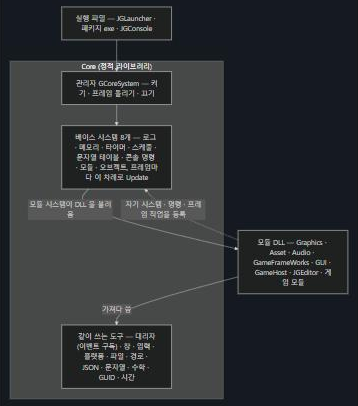
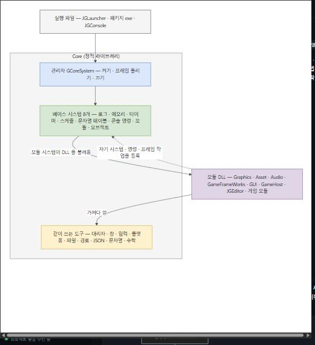

2026-10-17 엔진 총괄 · 같은 그림(Core 그림 설명 0번 “Core 한 장 요약”)을 세 가지로 그려 봤습니다
Mermaid 기본 어두운 모습 · 곡선 화살표 · 모든 상자가 같은 색

draw.io 기본 색(파랑 · 초록 · 노랑 · 보라)과 묶음 틀 · 역할마다 다른 색. 화살표는 아직 곡선

draw.io 와 거의 같은 모습 — 직각 화살표 · 자유 배치 · 둥근 상자 · 묶음 틀 머리
| 방식 | 좋은 점 | 대가 | 일 |
|---|---|---|---|
| ① Mermaid 꾸미기(시안 A) | 위키 · Obsidian · 대시보드에서 그대로 그려짐. 피드백을 받으면 글을 고쳐 바로 반영. 역할마다 색(관리자 파랑 · 시스템 초록 · 도구 노랑 · 모듈 보라) | 화살표는 곡선 그대로, 상자 배치는 Mermaid 가 정함 | 23장 1~2시간 |
| ② ① + 직각 화살표 (권고) | ①에 더해, 통합 대시보드가 Mermaid 의 ELK 배치를 쓰면 화살표가 직각으로 꺾이고 배치도 더 정돈됨 — draw.io 에 가까움. 고치기 쉬움은 그대로 | 대시보드 쪽 작업(프로젝트 총괄에 요청 — 배치 기능 하나 켜기). Obsidian 에서는 곡선으로 보임. 직각 모습은 켠 뒤에 확인 | ① + 대시보드 반나절 |
| ③ SVG 로 직접(시안 B) | draw.io 와 거의 같은 모습 — 직각 화살표 · 자유 배치 · 어디서나 같은 모습 | 고칠 때마다 그림 좌표를 다시 그려야 해 피드백 반영이 느림. 23장에 하루쯤. 위키에 그림 파일을 따로 둠(대시보드 · Obsidian 이 그림 파일을 보여 주는지 확인 필요) | 하루쯤 |
권고 까닭: 앞으로도 문서를 보며 피드백을 계속 보내실 것이라(“요거 내가 계속 피드백 보낼께”), 글로 바로 고칠 수 있는 Mermaid 를 지키면서 모습만 draw.io 에 가깝게 하는 ② 가 맞습니다. ③ 은 모습은 가장 좋지만 고치기가 느려집니다.
고르지 않아도 정해 둔 것: 어느 쪽이든 그림의 내용(무엇이 무엇을 부르는지)은 그대로입니다. “절 → 번호”, “덩어리 → 주제”, “바닥 시스템 → 베이스 시스템”은 이미 고쳤습니다.